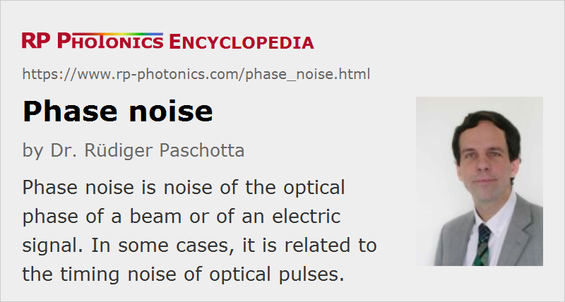

Phase Noise
Definition: noise of the optical phase of a beam or of an electric signal
More general terms: laser noise
German: Phasenrauschen
Category: fluctuations and noise
How to cite the article; suggest additional literature
Author: Dr. Rüdiger Paschotta
The output of a single-frequency laser is not perfectly monochromatic but rather exhibits some phase noise, i.e., fluctuations of the optical phase. This leads to a finite linewidth of the laser output. The same applies to the frequency components of the output of a mode-locked laser, i.e. to the lines of the emitted frequency comb.
The fundamental origin of phase noise is quantum noise, in particular spontaneous emission of the gain medium into the resonator modes, but also quantum noise associated with optical losses. In addition, there can be technical noise influences, e.g. due to vibrations of the cavity mirrors or to temperature fluctuations. In many cases, there is also a coupling of intensity noise to phase noise, e.g. via nonlinearities (see, e.g., the article on the linewidth enhancement factor).
Phase noise may occur in the form of a continuous frequency drift, or as sudden phase jumps, or as a combination of both.
Quantification of Phase Noise
Phase noise can be quantified by the power spectral density Sφ(f) of the phase deviations, having units of rad2/Hz (or simply Hz−1, as radians are dimensionless). This power spectral density often diverges for zero frequency, so that an r.m.s. value with integration down to zero frequency can not be specified. For simple random-walk processes, the specification of a coherence time or coherence length or of a linewidth value can be appropriate. See the article on noise specifications for more details.
Phase noise is directly related to frequency noise, as the instantaneous frequency is essentially the temporal derivative of the phase. For example, white (frequency-independent) frequency noise corresponds to phase noise with Sφ(f) ≈ 1 / f2.
Measurement of Optical Phase Noise
Phase noise measurements are often based on a recorded beat note between two lasers on a fast photodiode. Alternatively, it is possible to record a beat note of the laser output with a different portion of the same laser output, which is subject to a long delay, e.g. by propagation through a long span of optical fiber (→ self-heterodyne linewidth measurement). For more details on possible measurements, see the article on the term linewidth.
Optical Phase Noise Versus Timing Jitter
Sometimes there is a confusion between optical phase noise (as discussed above) and timing jitter of a mode-locked laser, because timing jitter can also be seen as a kind of phase noise: a timing change by one pulse period (i.e. the inverse pulse repetition rate) can be interpreted as a phase change of 2π. Such a phase can be called timing phase. The corresponding phase noise may be denoted as “timing phase noise” in order to avoid confusion. Of course, mode-locked lasers also exhibit optical phase noise in all lines of the emitted frequency combs.
Comparison of Normalized Phase Noise
When comparing the level of phase noise of different oscillators, it is often appropriate to normalize it to the corresponding oscillator frequencies. In frequency metrology, it is common to use the quantity
which is the magnitude of phase fluctuations divided by the mean angular frequency. The quantity of x(t) does not change e.g. when digital oscillating signal is sent through a frequency divider, which reduces the phase fluctuations in proportion to the mean frequency. A comparison of optimized low-noise lasers, which are stabilized to some optical frequency standard, with high-quality microwave oscillators in terms of phase noise, shows that lasers normally have a higher level of phase noise δφ(t) but a lower level of normalized phase noise x(t), which means that they are superior e.g. when used as clocks. Even without any stabilization, a laser can have a very low phase noise level at high noise frequencies, making it very suitable as a fly-wheel oscillator.
Suppliers
The RP Photonics Buyer's Guide contains 4 suppliers for phase noise measurement equipment. Among them:
Questions and Comments from Users
Here you can submit questions and comments. As far as they get accepted by the author, they will appear above this paragraph together with the author’s answer. The author will decide on acceptance based on certain criteria. Essentially, the issue must be of sufficiently broad interest.
Please do not enter personal data here; we would otherwise delete it soon. (See also our privacy declaration.) If you wish to receive personal feedback or consultancy from the author, please contact him e.g. via e-mail.
By submitting the information, you give your consent to the potential publication of your inputs on our website according to our rules. (If you later retract your consent, we will delete those inputs.) As your inputs are first reviewed by the author, they may be published with some delay.
Bibliography
| [1] | A. L. Schawlow and C. H. Townes, “Infrared and optical masers”, Phys. Rev. 112 (6), 1940 (1958), doi:10.1103/PhysRev.112.1940 (contains the famous Schawlow–Townes equation) |
| [2] | R. Paschotta et al., “Optical phase noise and carrier–envelope offset noise of mode-locked lasers”, Appl. Phys. B 82 (2), 265 (2006), doi:10.1007/s00340-005-2041-9 |
| [3] | R. Paschotta, "Noise in Laser Technology – Part 1: Intensity and Phase Noise" |
See also: coherence, coherence time, linewidth, optical phase, Schawlow–Townes linewidth, self-heterodyne linewidth measurement, optical heterodyne detection, noise specifications, power spectral density, frequency noise, intensity noise, frequency metrology, timing jitter, laser noise
and other articles in the category fluctuations and noise
|  |
If you like this page, please share the link with your friends and colleagues, e.g. via social media:
These sharing buttons are implemented in a privacy-friendly way!